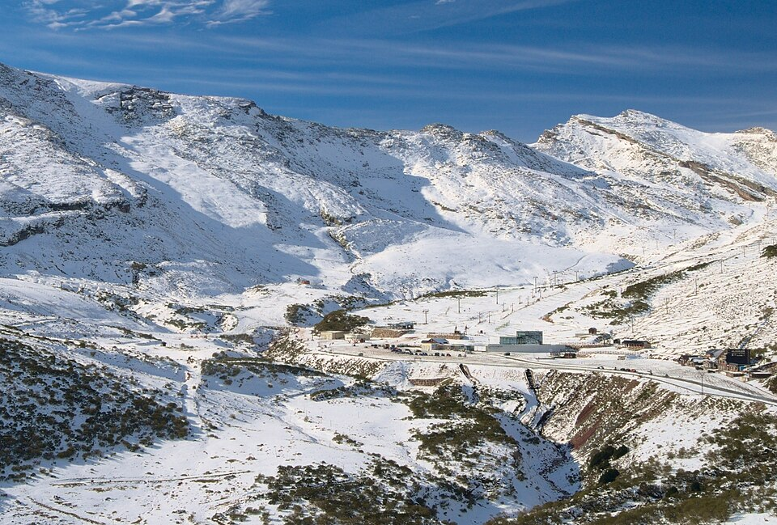

Alto Campoo
Campoo · Cantabria
- Pistas
- 20 km
- 35 trazados
- Cota máxima
- 2121 m
- mínima 1643 m
- Desnivel
- 478 m
- esquiable
- Remontes
- 11
- 4 telesillas · 6 telesquís
En Brañavieja, al pie del Pico Tres Mares. Laderas amplias y sin arbolado en la vertiente sur de la Cordillera Cantábrica.
Foto: Jaime Juan Suárez Martínez · CC BY-SA 3.0 es · Wikimedia Commons

Hoy
Alto Campoo ahora mismo
Estado de pistas y remontes según el último parte publicado, y las webcams de la estación.
Webcams
Estado y webcams de Infonieve.es, a partir de los partes y cámaras de cada estación. Antes de salir, confírmalo en la web oficial o en su parte de nieve.
Próximos 7 días
Nieve y tiempo previstos
Previsión para la cota alta (2121 m) y la base (1643 m).
Previsión de modelos meteorológicos de Open-Meteo (CC BY 4.0). Es previsión, no observación: lo que hay abierto hoy está en el estado de pistas.
Plano
Plano de pistas
Pasa el cursor o toca una pista o un remonte para ver su nombre, longitud y desnivel.
Trazados: © colaboradores de OpenStreetMap (ODbL), datos del 10 de agosto de 2026. No es el plano oficial de la estación ni refleja aperturas.
Pistas
35 pistas, 20 km
La más larga con nombre es Río Híjar (1,5 km, azul).
VerdeMuy fácil
6 pistas · 2,2 km
Ver nombres
- Calgosa II 0,5 km
- Calgosa I 0,5 km
- Pidruecos 0,5 km
- Tobogán II 0,2 km
- Tobogán I 0,2 km
AzulFácil
14 pistas · 9,1 km
Ver nombres
- Río Híjar 1,5 km
- Peña Labra 1,2 km
- Pidruecos 1,1 km
- Pidruecos 0,9 km
- Río Hijar II 0,6 km
- La Cabaña 0,6 km
- Río Híjar 0,6 km
- Río Hijar II 0,5 km
- Río Hijar II 0,2 km
- Peña Labra 0,2 km
- El Chivo 0,2 km
RojaIntermedia
14 pistas · 8,6 km
Ver nombres
- El Castro II 1 km
- Cuchillón 1 km
- El Castro I 0,9 km
- Stadium 0,9 km
- Tres Mares 0,8 km
- Los Asnos 0,8 km
- La Tortuga 0,6 km
- Las Hoyas 0,5 km
- El Chivo SP II 0,3 km
- El Chivo SP I 0,3 km
- El Chivo SP I 0,3 km
- Enlace 0,2 km
- La Tortuga 0,2 km
Sin clasificarSin dificultad en los datos
1 pistas · 0,2 km
Remontes
11 remontes
El de mayor desnivel: El Castro, 290 m.
| Remonte | Tipo | Longitud | Desnivel | Llegada |
|---|---|---|---|---|
| El Castro | Telesquí | 886 m | 290 m | 1994 m |
| Tres Mares | Telesilla | 934 m | 282 m | 2117 m |
| Los Asnos | Telesquí | 755 m | 262 m | 2055 m |
| El Cuchillón | Telesilla | 943 m | 239 m | 1887 m |
| Río Híjar | Telesilla | 1660 m | 235 m | 1894 m |
| Telesilla Pidruecos | Telesilla | 1333 m | 197 m | 1848 m |
| Calgosa II | Telesquí | 517 m | 49 m | 1704 m |
| Calgosa I | Telesquí | 499 m | 47 m | 1702 m |
| Tobogán I | Telesquí | 194 m | 35 m | 1929 m |
| Tobogán II | Telesquí | 203 m | 27 m | 1921 m |
| Cinta Calgosa | Cinta | 180 m | 18 m | 1671 m |
Longitud en planta y desnivel sobre el modelo de relieve. No incluye horarios ni estado de apertura.
Guía práctica
Antes de ir a Alto Campoo
Cómo llegar
Campoo, Cantabria. Coordenadas del dominio: 43,038, -4,3895.
Ver en OpenStreetMap · Cómo llegar en coche
En invierno comprueba el estado de la carretera y si hacen falta cadenas.
El terreno
- El Cuchillón, 2174 m
- Cuchillón, 2174 m
- Las Hoyas, 2174 m
- Pico de los Tres Mares, 2171 m
Enlaces oficiales
Forfaits, horarios y aperturas cambian durante la temporada: los publica la estación.
Para parar en pistas
- Cafetería El Chivo
Restaurantes y cafeterías con nombre en OpenStreetMap. Sin horarios.
Alto Campoo sin cobertura
La app para Android guarda los mapas en el móvil y te ayuda a encontrarte con tu grupo.